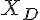
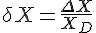

Тема 1. Точность измерений
1. Измерение - совокупность действий для определения отношения одной (измеряемой) величины к другой однородной величине, принятой всеми участниками за единицу, хранящуюся в техническом средстве (средстве измерений).
2. Единство измерений - это такое состояние измерений, при котором их результаты выражены в узаконенных единицах, а их метрологические характеристики соответствуют установленным нормам.
3. Погрешность результата измерений - отклонение измеренного значения величины от её истинного (действительного) значения. Погрешность измерения является характеристикой точности измерения
4. Меры - средства измерений, предназначенные для воспроизведения и хранения значения физической величины
5. Косвенные измерения - это измерения, при которых определение искомого значения физической величины производится на основании результатов прямых измерении других физических величин, функционально связанных с искомой величиной.
5. Косвенные измерения - это измерения, при которых значение величины находится на основании известной зависимости между этой величиной и величинами, подвергаемыми прямым измерениям
6. Прямые измерения - такие измерения, при которых искомое значение физической величины определяется непосредственно путём сравнения с мерой этой величины. Например, прямым является измерение длины рулеткой или линейкой
7. Статические измерения - измерение величины, которая принимается в соответствии с поставленной измерительной задачей за неизменяющуюся на протяжении периода измерения
8. Динамические измерения - это измерения, в процессе которых измеряемая величина изменяется во времени, например, измерение давления и температуры при сжатии газа в цилиндре двигателя.
9. Абсолютная погрешность измерения - погрешность, выраженная в единицах измеряемой величины. Вместо истинного значения измеряемой величины, на практике пользуются действительным значением  , которое достаточно близко к истинному, определяется экспериментальным путем и в конкретной задаче может приниматься вместо него. Из-за того что истинное значение величины всегда неизвестно, можно лишь оценить границы, в которых лежит погрешность, с некоторой вероятностью.
10. Относительная погрешность измерения - выражается отношением . Является безразмерной величиной; её численное значение может указываться, например, в процентах.
11. Систематическая погрешность - погрешность, изменяющаяся во времени по определённому закону (частным случаем является постоянная погрешность, не изменяющаяся с течением времени). Систематические погрешности могут быть связаны с ошибками приборов (неправильная шкала, калибровка и т. п.), неучтёнными экспериментатором
12. Случайная погрешность - это составляющая погрешности измерения, изменяющаяся случайным образом в серии повторных измерений одной и той же величины, проведенных в одних и тех же условиях. В появлении таких погрешностей не наблюдается какой-либо закономерности, они обнаруживаются при повторных измерениях одной и той же величины в виде некоторого разброса получаемых результатов. Случайные погрешности неизбежны, неустранимы и всегда присутствуют в результате измерения, однако их влияние обычно можно устранить статистической обработкой. Описание случайных погрешностей возможно только на основе теории случайных процессов и математической статистики.
13. Цель проверки соблюдения метрологических правил и норм является определение состояния правильности применения средств измерений, контроль соблюдения метрологических правил и норм, определение наличия и правильности применения аттестованных методик выполнения измерений.
14. Поверка по сравнению с внешним контролем качества обеспечивает более точный контроль инструментальной погрешности средств измерения и обязательное определение систематической составляющей инструментальной погрешности
15. Истинное и действительное значения измеряемой величины:
Истинное значение физической величины - это значение, идеально отражающее в качественном и количественном отношениях соответствующее свойство объекта. Из-за несовершенства средств и методов измерений истинные значения величин практически получить нельзя. Их можно представить только теоретически. А значения величины, полученные при измерении, лишь в большей или меньшей степени приближаются к истинному значению.
Действительное значение физической величины - это значение величины, найденное экспериментальным путем и настолько приближающееся к истинному значению, что для данной цели может быть использовано вместо него.
16. Качественная характеристика физической величины - размерность физической величины
17. Единица физической величины - физическая величина фиксированного размера, которой условно по соглашению присвоено числовое значение, равное 1. С единицей физической величины можно сравнить любую другую величину того же рода и выразить их отношение в виде числа. Применяется для количественного выражения однородных с ней физических величин. Единицы измерения имеют присвоенные им по соглашению наименования и обозначения
18. Основные и дополнительные единицы физических величин
|
Величина |
Единица измерения |
Сокращенное обозначение (русское) |
Сокращенное обозначение (международное) |
|
Длинна |
метр |
м |
m |
|
Масса |
килограмм |
кг |
kg |
|
Время |
секунда |
с |
s |
|
Сила эл. тока |
ампер |
А |
A |
|
Термодинамическая температура |
кельвин |
К |
K |
|
Сила света |
кандела |
кд |
cd |
|
Кол-во вещества |
моль |
моль |
mol |
Международная система единиц включает в себя две дополнительные единицы — для измерения плоского и телесного углов.
Единица плоского угла — радиан (рад) — угол между двумя радиусами окружности, дуга между которыми по длине равна радиусу. В градусном исчислении радиан равен 57°17'48".
Стерадиан (ср), принимаемый за единицу телесного угла, — телесный угол, вершина которого расположена в центре сферы и который вырезает на поверхности сферы площадь, равную площади квадрата со стороной, по длине равной радиусу сферы. (больше - https://cyberpedia.su/6x94a5.html)
19. Виды измерений по количеству измерительной информации:
а) Однократные измерения — это одно измерение одной величины, т.е. число измерений равно числу измеряемых величин. Практическое применение такого вида измерений всегда сопряжено с большими погрешностями.
б) Многократные измерения — характеризуются превышением числа измерений количества измеряемых величин. Преимущество многократных измерений — значительное снижение влияний случайных факторов на погрешность измерения.
20. Виды измерений по характеру изменения получаемой информации в процессе:
а) Статические — применяют для измерения случайных процессов, а затем для определения среднестатистической величины;
б) Постоянные — используют для контроля непрерывных процессов.
измерения21. Виды измерений по отношению к основным единицам
22. Совместные измерения - измерения, проводимые одновременно измерения двух или нескольких неодноименных величин для нахождения зависимости между ними
23. Совокупные измерения - когда проводят измерения одновременно нескольких однородных величин, когда значения этих величин находят путем решения системы уравнений, получаемых при измерениях различных сочетаний этих величин.
24. Средства измерений, предназначенные для воспроизведения и/или хранения физической величины - мера физ. величины
25. Требования, которые предъявляются к эталонам - https://www.consultant.ru/document/cons_doc_LAW_77904/19ba87d3b5248fb40abc20af4b47211f126ec90d/
26. Виды эталонов:
· Вторичный эталон — эталон, получающий размер единицы непосредственно от первичного эталона данной единицы.
· Эталон сравнения — эталон, применяемый для сличений эталонов, которые по тем или иным причинам не могут быть непосредственно сличены друг с другом.
· Исходный эталон — эталон, обладающий наивысшими метрологическими свойствами (в данной лаборатории, организации, на предприятии), от которого передают размер единицы подчинённым эталонам и имеющимся средствам измерений.
· Рабочий эталон — эталон, предназначенный для передачи размера единицы рабочим средствам измерений.
· Государственный первичный эталон — первичный эталон, признанный решением уполномоченного на то государственного органа в качестве исходного на территории государства.
· Международный эталон — эталон, принятый по международному соглашению в качестве международной основы для согласования с ним размеров единиц, воспроизводимых и хранимых национальными эталонами.
27. Прямое измерение - это такие измерения, при которых искомое значение физической величины определяется непосредственно путём сравнения с мерой этой величины. Например, прямым является измерение длины рулеткой или линейкой.
28. Косвенное измерение - измерения, при которых значение величины находится на основании известной зависимости между этой величиной и величинами, подвергаемыми прямым измерениям
Тема 2. Средства измерений и их характеристики
1. Поверка средств измерений - совокупность операций, выполняемых органами Государственной метрологической службы (другими уполномоченными на то органами, организациями) в целях подтверждения соответствия средства измерения установленным метрологическим требованиям. Цель поверки – выяснить, соответствуют ли характеристики средства измерения регламентированным значениям и пригодно ли оно к применению по прямому назначению.
2. Альтернативные результаты поверки средств измерений - подтверждение (не)пригодности к применению
3. Способы подтверждения пригодности средства измерения к применению - выдача свидетельства о поверке
4. Калибровка - совокупность операций, выполняемых в целях определения действительных значений метрологических характеристик средств измерений
5. Принципиальное отличие поверки от калибровки измерительного устройства - обязательный характер
6. Определение понятия «методика измерений» - Процедура отбора и анализа пробы на содержание одного или нескольких загрязняющих веществ в атмосферном воздухе, включающая хранение и транспортирование пробы.
Дальше не успел)))
7. Виды средств измерений
8. Нормированные метрологические характеристики средств измерений
9. Виды шкал
10. Область значения шкалы, ограниченная начальным и конечным значением
11. Градуировочная характеристика средства измерения – назначение, виды
12. Средства поверки технических устройств
13. Класс точности средства измерений - нормирование погрешностей, форма
записи
14. Классы точности цифровых и аналоговых приборов
15. График поправок – назначение и применение
16. Метод максимального правдоподобия
17. Алгоритм метода максимального правдоподобия
18. Проверка в методе максимального правдоподобия